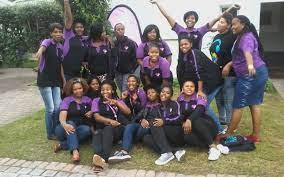
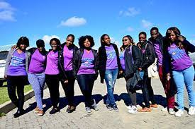
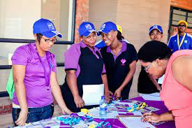
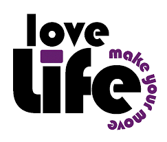

Mpintshi's
The Mpintshis Programme
Youth Leadership Development within loveLife is rooted on the premise that all young people are already leaders. The youth leadership development programmes within the organisation seek to develop young people’s leadership, activism, agency, self-awareness, strengths, skills, competencies, networks, goals and resilience to tackle the challenges they face.
Friends...
A leader in Youth Health promotion
The mpintshi programme is one of loveLife’s flagship youth leadership development programmes. The programme is a youth leadership development journey for in and out-of-school youth who want to develop their ability to guide others on a course of constructive action. It aims to get young people to influence the opinions and behaviours of other youth towards positive social change and bettering their futures and communities. They do this by volunteering their time to implement loveLife’s healthy sexuality, positive lifestyle and skills development programmes, including Cyber Ys (provides computer skills) and Media Ys (imparts citizen journalism skills). Through facilitating the organisation’s range of programmes, they are empowered with knowledge, experience and competencies for acting as change agents and cultivators of healthy attitudes and lifestyles among their peers and the broader community.
Offering numerous benefits, the mpintshi programme is a platform for youth to get inspired, realise their untapped potential And demonstrate leadership by implementing loveLife programmes through face-to-face programming and interaction.
mpintshis are taken through a series of capacity building programmes to equip them with the necessary knowledge, skills and techniques for effective outreach and mobilisation. They are led, guided and supported by loveLife groundBREAKERs (peer motivators and community mobilisers) in loveLife programme implementation. Working together with groundBREAKERs, they epitomise the philosophy of healthy lifestyle living and of being change agents in their communities.
Who Are Mpintshis
mpintshis are young leaders who serve as in or out-of-school loveLifestyle programme implementers.
- In-school mpintshis are between the ages of 12-17.
- Out-of-school mpintshis are between 17 and 24 years old.
What Do Mpinthis Do?
They are the primary drivers of implementation and are at the frontline of loveLife service delivery, offering face-to-face programming and interaction. They implement outreach programmes throughout South Africa, working in:
- loveLife Y-Centre Academies;
- Community Partnerships (franchises);
- Schools;
- dolescent and Youth Friendly Clinics;
- Youth groups in various communities.
Each year at least 6 200 full-time youth are recruited into the programme, and to date almost 15 000 young people have graduated from the mpintshi programme.
How Do Mpintshi Personally Benefit From Their Involvoment With LoveLife?
There are MANY empowering opportunities that come about from being an mpintshi.
- You reduce your chance of becoming involved in risky activities by leading a positive lifestyle;
- You acquire job-related skills, including facilitation, organisation skills and the ability to run meetings and sessions;
- You learn how to communicate more effectively;
- You begin to recognise your personal power and your power to help others;
- You get a safe place to hang out and just be yourself;
- You develop a supportive network of other young people who are also striving to make healthy lifestyle choices;
- You get the opportunity to excel in your role and are eligible for prizes and awards offered by loveLife
- At the end of the year you are rewarded with a recognition certificate which serves as a reference for potential employers and other future endeavours
mpintshis usually do not receive a stipend. Their commitment to loveLife is rewarded with a training package, some transport money, loveLife-branded gear and the opportunity to progress in the organisation to become a groundBREAKER.

Following their year of service, successful mpintshis become eligible to serve as loveLife groundBREAKERs, where they receive a gear and stipend. In this way, they can carry on the legacy of all the great work done in the year! All mpintshis also have the choice to be registered as ‘alumni’ following their year of service.
Alumni give their contact details to loveLife and remain connected to the loveLife network of opportunities. Alumni implement special programmes with loveLife, are connected to pipelines of opportunities and can serve as mentors to new mpintshi recruits. In doing so, mpintshis continue to reap the benefits of being involved with loveLife!
How Can One Apply To Become An Mpintshi?
Approach your closest loveLife site to find out about becoming an mpintshi. To find your nearest loveLife site, visit our contacts page on the website. You can also apply to become an mpintshi by filling in the form below and submitting it to the person who is responsible there.
For more information on the mpintshi programme and loveLife, get in touch with loveLife’s Contact Centre on 0800 121 900 or send a PLZ CAL ME to 083 323 1023 and an agent will call you back as soon as one is available.